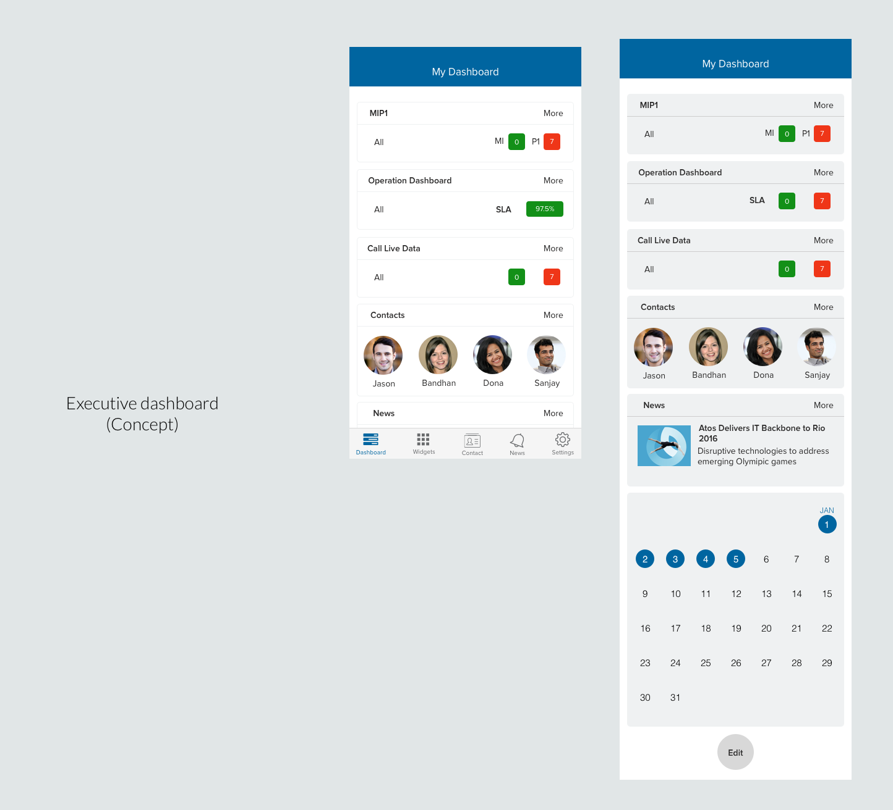

UX Designer
Nov 2016 - Present
Sketch 3
Usability Testing
Wireframes
Prototyping
Atos is an IT services company focused on digital transformation solutions for its clients. The product, Atos OneSource, is a mobile app that provides a consolidated dashboard to Atos' client CTOs / CIOs. This dashboard includes details on Atos' services, and reports and timelines of ongoing projects. With this app, our aim is to increase client retention by providing a differentiated value added product, to improve client's knowledge of the breadth of Atos' offerings and to increase internal efficiencies via more granular data and insights.
To comply with my non-disclosure agreement, I have omitted confidential information in this case study. The information in this case study is my own and does not necessarily reflect the views of Atos.
I have led design for Atos OneSource across iOS and Android since November 2016. My primary goal was to improve the existing user experience. I have worked on customer pain‐points related to navigation, designing to facilitate discovery of key functions and placing of marketing material. I worked closely with project managers and developers in launching new features to achieve business goals of the product.
OneSource deals with an advanced customer base that has unique business and technical knowledge. I started by interviewing 15 people with different roles within Atos to understand the application from a broader business perspective and its different use-cases, which helped me define the scope of my design.
After receiving feedback from the account teams that work closely with customers on a daily basis and Atos personnel who manage or indirectly work with the account teams, I identified the following challenges in the design process.
As the product was already in use, the product owner was not keen on big changes within the app, worrying about disruption to the ongoing user experience of customers. Then the product owner and I discussed and defined among my suggested changes which would be “Design quick-wins” that can be implemented in the short term and which will be “implemented step by step” in the long term.
Clients, especially higher executive client are very difficult to arrange meeting with. They are too busy to run the usability tests. The account team helped me in setting a first round usability testing with 6 users including 1 higher level manager, 3 mid-management users and 2 technical managers.
Because the product is already in use, there is legacy issue I also have to consider. The product owner doesn’t want too big changes within the app. Then I have to find the mid-point to balance the product roadmap and the user experience. The product owner and I discussed and defined among my suggested changes which would be “Design quick-wins” that can be implemented in the short term and which will be “implemented step by step” in the long term.
To address the navigation /discoverability issue
To address the needs for different persona, e.g.the executive level users who needs high level-data and also wants to get in-and-out the app easily, we provide them with Executive Dashboard. For technical managers who need to drill-down one ticket and get detail information, we provide the ability detailed view on laptop.
Since we are a service provider, we not only want to provide transparency of our service data, we also want to provide remedy when there is a issue. This makes a communication channel between the clients and the service delivery team necessary. Since a client in a different persona is interested in different dashboards / page, one single feedback channel is not effective. We took an approach to allow the user provide feedback / escalation in every dashboard. The service delivery team member from our account team are in charge of the responding to the user feedback.
Note: These are only partial of the work that I did for Atos OneSource.